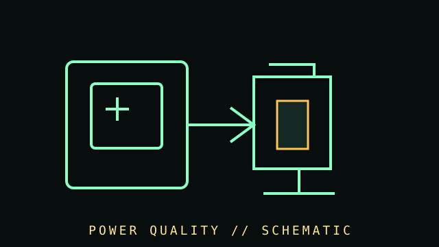

[ COMPONENT RECORD // POWER CONTINUITY ]
Power
protection.
Surge protectors and uninterruptible power supplies help address electrical events and brief outages. Protection claims depend on device design, installation, grounding, battery condition, load, and the local electrical system.

CLASS RECORD: UPS, surge protective devices, and backup batteries. These devices do not replace correct building wiring, grounding, or qualified electrical work.
Reference specifications
| UPS topologies | Standby/offline, line-interactive, and online/double-conversion designs differ in transfer behavior, regulation, efficiency, and output waveform. |
|---|---|
| Capacity | VA and watt ratings are distinct; runtime depends on load, battery age, temperature, discharge curve, and device condition. |
| Battery | Common designs use sealed lead-acid or lithium-ion batteries. Chemistry, voltage, pack configuration, replacement procedure, and service interval are model-specific. |
| Monitoring | USB/network signaling, shutdown software, replace-battery indicators, transfer logs, and self-tests vary by model and host OS. |
Deployment & upkeep
- Size for actual watts and required runtime, not VA alone. Include monitor/network equipment if they must remain online.
- Replace batteries only with manufacturer-approved type and follow disposal and electrical safety directions.
- Test runtime and shutdown behavior regularly; a lit status indicator does not prove a healthy battery or adequate runtime.
- Do not connect laser printers, heaters, or other high-draw loads to battery-backed outlets unless the UPS maker explicitly permits it.
- Surge protectors wear; check status indicators, age, joule/test certifications, and replacement recommendations. Never daisy-chain power strips.
Sources & further reading
- Eaton — UPS technology and sizingManufacturer overview of UPS types and product selection.
- Schneider Electric/APC — UPS support and runtime toolsManufacturer calculators and model-specific maintenance documentation.
- NFPA — National Electrical Code informationElectrical installation is governed by applicable codes; use qualified professionals where required.